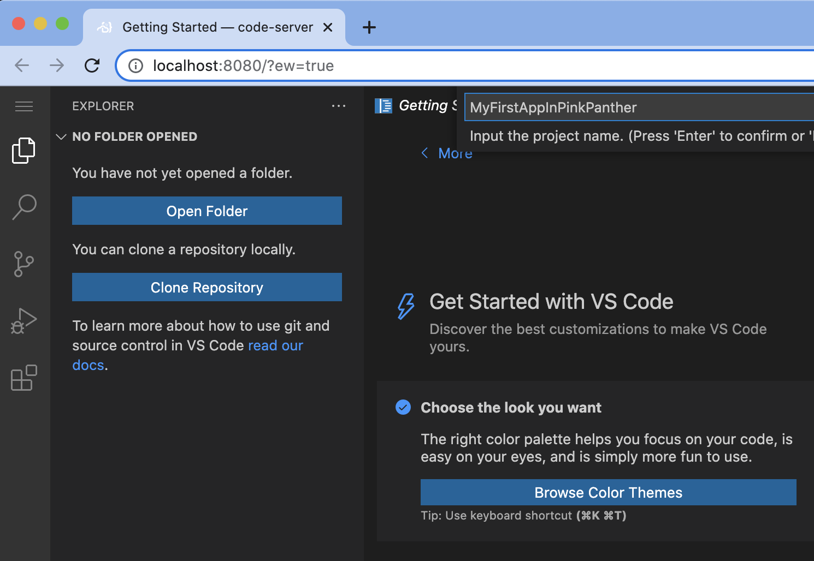

In this section we will cover how to scaffold an API with Anypoint Code Builder
What you'll build
In this codelab we will be covering the scaffolding of an API following these steps:
- Authenticating against the Anypoint Platform
- Create API Implementation from Scratch
- Add API as dependency from Exchange
- Scaffolding WTW Radar Management API
What you'll learn
These steps will walk you through the scaffolding of a previously built API in Anypoint Code Builder. You will learn:
- How the complete the scaffolding of an API in Anypoint Code Builder
What you'll need
A working Anypoint Code Builder installation.
Click in the activity bar, type @installed and identify Mule DX Dev Component which centralize all capabilities for building integrations. Also Mule DX - Mule Runtime bundle the latest version of the runtime.
Explore all tabs and details
Introduction
In this section we will guide you through on the creation of a project using Anypoint Code Builder and explore some xml warnings that will pop-up on the main file.
Requirements
The basic requirement is to have access to Anypoint Code builder and an Anypoint Platform account to access the assets you will scaffold.
Getting Started
Open command palette and search for Create Project

Alternatively, expand "PROJECTS" and select "Create a Project"

Select "Mule Project Type" , this will generate the folder structure of a MuleSoft project

Complete Project Name, runtime versions (default) and location (default)

Explore the project structure.
Open my-first-api.xml file
At this point you can see 3 warnings on my-first-api-in-pink-panther.xml configuration file (use F8 to jump to the next error in the editor).
If you place the cursor over those errors you will see an option to "View Problem" (this case UNUSED_NAMESPACE) or "Quick Fix" action item.
Introduction
In this section you will connect with your Anypoint Platform account and will download an Exchange asset as a dependency of your project.
Requirements
The basic requirement is to have access to Anypoint Code builder and an Anypoint Platform account to access the assets you will scaffold.
Getting Started
Go back to your previous project with the command Open Folder and selecting the mule application folder
As we will be searching in Anypoint Platform, log in if not already done so
Alternatively, double click the status bar at the bottom right to log in
Search for an API in Exchange
Select Rest API and continue
Complete the field to search and type enter
Select the API and pick a version , in this example we are using WTW Radar Live Management API, a public asset provided by MuleSoft
The dependency will be added to the pom.xml file
Click Yes when asked if you want to scaffold the API Dependency
If the scaffolding is successful, you will see this message
A new xml file has been created with the scaffolding results
Add the dataweave dependencies to the pom.xml file as described in Code Labs XXX
Now you are ready to add connectors and implement your API.